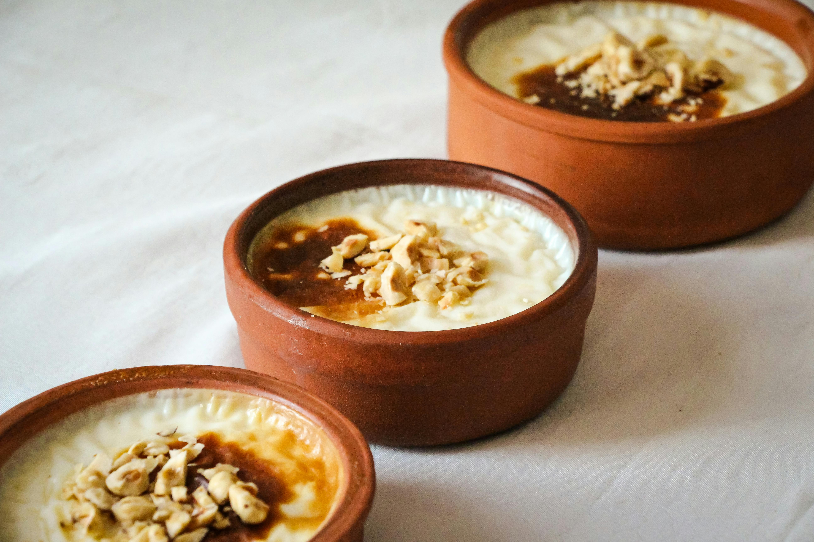

Homepage
Rice Pudding

Description
Rice pudding is a creamy and comforting dessert made from rice, milk, sugar, and flavored with vanilla or cinnamon.
It's a popular treat enjoyed around the world.
Ingredients
- 1 cup white rice
- 4 cups milk
- 1/2 cup sugar
- 1 teaspoon vanilla extract
- 1/2 teaspoon ground cinnamon (optional)
- Raisins or nuts for garnish (optional)
Instructions
- Rinse the rice under cold water until the water runs clear.
- In a large saucepan, combine the rice and 2 cups of water. Bring to a boil, then reduce heat to low, cover, and simmer for about 15 minutes or until the water is absorbed.
- Add the milk and sugar to the cooked rice. Stir well to combine.
- Cook over medium heat, stirring frequently, until the mixture thickens and the rice is tender, about 20-25 minutes.
- Remove from heat and stir in the vanilla extract. If desired, sprinkle with ground cinnamon.
- Let the rice pudding cool slightly before serving. Garnish with raisins or nuts if desired.
- Serve warm or chilled.